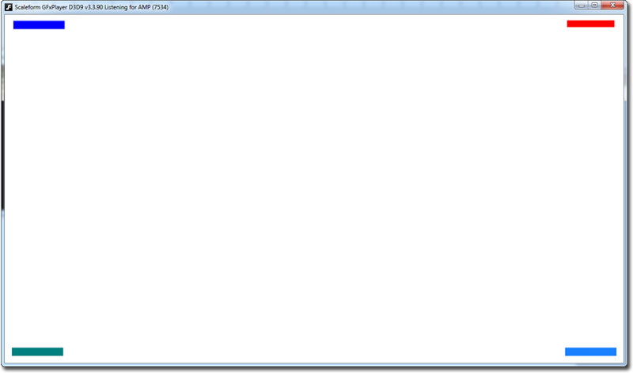

UDN
Search public documentation:
GFxPositioningGuideKR
English Translation
日本語訳
中国翻译
Interested in the Unreal Engine?
Visit the Unreal Technology site.
Looking for jobs and company info?
Check out the Epic games site.
Questions about support via UDN?
Contact the UDN Staff
日本語訳
中国翻译
Interested in the Unreal Engine?
Visit the Unreal Technology site.
Looking for jobs and company info?
Check out the Epic games site.
Questions about support via UDN?
Contact the UDN Staff
SetViewScaleMode, SetAlignment, SetViewport 안내서
문서 변경내역: James Tan 작성. 홍성진 번역.
개요
GFxMoviePlayer 함수 중 SetViewScaleMode(), SetAlignment(), SetViewport() (뷰 스케일 모드 설정, 얼라인먼트 설정, 뷰포트 설정 함수)를 언제 어떻게 사용할 것인지 이해를 돕기 위한 간단 튜토리얼입니다. 우선 이 세 함수는 Start() 와 Advance() 를 사용하여 무비가 시작된 후 GFx Movie 상에서 호출되는 것입니다. 전형적으로 그 사용법은 이와 같습니다:
function CreateMovie()
{
MyMovie = new MenuClass;
// MenuClass 의 Init 함수에는 Start() 와 Advance() 가 들어 있습니다.
MyMovie.Init(class'Engine'.static.GetEngine().GamePlayers[MyMovie.LocalPlayerOwnerIndex]);
MyMovie.SetViewScaleMode(SM_NoScale);
MyMovie.SetAlignment(Align_TopCenter);
}
SetViewScaleMode 파라미터
SetViewScaleMode 는 해상도가 변경되면 GFx Movie 를 화면에 어떻게 스케일 조절할/맞출 지를 지정합니다. 스케일 모드는 ActionScript 나 UnrealScript 중 하나에서 설정 가능합니다.
MyMovie.SetViewScaleMode(SM_NoScale);
- SM_NoScale 스케일 없음 - UDK 에서의 해상도 변경과는 무관하게, SWF 크기와 종횡비(Aspect Ratio)는 Flash IDE 에서 설정한 원본 도큐먼트 치수 그대로 유지됩니다. 스케일은 조절되지 않지만, 플래시 도큐먼트 크기보다 게임 해상도가 작은 경우라면 잘립(clipping)니다.
- SM_ShowAll 모두 표시 - UDK 해상도 설정이 어떻든지간에 전체 SWF 는 항상 보입니다. SWF 에 균등 스케일을 적용하여 원본 종횡비를 유지하며, 잘리진 않지만 레터박싱(일반화면에서 와이드영상을 볼 때와 같은) 현상은 일어납니다.
- SM_ExactFit 꼭 맞춤 - 화면 해상도에 꼭 맞추기 위해 SWF 의 종횡비를 변경하여 늘이거나 비균등 스케일을 적용합니다. 무비클립의 X 나 Y 가 왜곡되며, 잘리지는 않습니다.
- SM_NoBorder 테두리 없음 - SWF 는 항상 원본 종횡비로 표시되나, 해상도에 따라 스케일을 달리 적용합니다. 플래시 도큐먼트 크기보다 게임 해상도가 작으면 잘립니다.
Stage.scaleMode = "noScale";
- noScale == SM_NoScale.
- showAll == SM_ShowAll.
- exactFit == SM_ExactFit.
- noBorder == SM_NoBorder.
SetAlignment 파라미터
SetAlignment 는 GFx 무비를 화면에 위치를 어떻게 잡을지를 지정합니다. SetAlignment 는 ActionScript 나 UnrealScript 중 하나에서 설정 가능합니다.
MyMovie.SetAlignment(Align_TopCenter);
- Align_Center - SWF 중앙을 화면 중앙에 맞춥니다.
- Align_TopCenter - SWF 상단을 화면 상단 중앙에 맞춥니다.
- Align_BottomCenter - SWF 하단을 화면 하단 중앙에 맞춥니다.
- Align_CenterLeft - SWF 좌단을 화면 좌단 중앙에 맞춥니다.
- Align_CenterRight - SWF 우단을 화면 우단 중앙에 맞춥니다.
- Align_TopLeft - SWF 좌상단을 화면 좌상단에 맞춥니다.
- Align_TopRight - SWF 우상단을 화면 우상단에 맞춥니다.
- Align_BottomLeft - SWF 좌하단을 화면 좌하단에 맞춥니다.
- Align_BottomRight - SWF 우하단을 화면 우하단에 맞춥니다.
Stage.align = "TL";
- C == Align_Center.
- TC == Align_TopCenter.
- BC == Align_BottomCenter.
- CL == Align_CenterLeft.
- CR == Align_CenterRight.
- TL == Align_TopLeft.
- TR == Align_TopRight.
- BL == Align_BottomLeft.
- BR == Align_BottomRight.
SetViewport
SetViewport 는 GFx 무비 뷰포트의 표시 크기와 위치를 수동으로 변경합니다. 예: MyMovie.SetViewport(0, 0, 1280, 720) 는 무비를 1280x720 크기로 표시하며, 무비 좌상단은 화면 좌표 0,0 에서 시작합니다.
용례
- 플래시에서 1280x720 도큐먼트를 새로 만듭니다.
- 각기 다른 색의 작은 사각형을 네 개 만든 다음, 플래시 파일의 구석에서 대략 15 픽셀 떨어진 곳에 사각형을 하나씩 놓습니다.
- 네 사각형 모두 무비 클립으로 변환합니다. 중요: 모든 사각형의 등록 지점(registration point)은 사각형의 좌상단에 있어야 합니다. '심볼로 변환' 창에서 등록 지점 아이콘을 사용하여 각각의 사각형을 심볼로 변환할 때는, 등록 지점이 제대로 설정되었는지 확인하시기 바랍니다.
- 좌상단에서 시작하여 시계방향으로 각각의 사각형에 다음과 같이 인스턴스 이름을 짓습니다: rectangle1, rectangle2, rectangle3, rectangle4. 그러면 이와 같은 모습입니다:

- 액션 레이어를 새로 만듭니다.
- 그 레이어에서 이 코드를 입력합니다:
_global.gfxExtensions = true;
Stage.scaleMode = "noScale";
Stage.align = "TL";
var srl:Object = new Object();
function updateHud():Void
{
// 가장자리에서 15 픽셀 떨어진 곳에 사각형을 놓습니다.
// 좌상
rectangle1._y = 15;
rectangle1._x = 15;
// 우상
rectangle2._y = 15;
rectangle2._x = (Stage["visibleRect"].width - 15) - rectangle2.width;
// 우하
rectangle3._y = (Stage["visibleRect"].height - 15) - rectangle3.height;
rectangle3._x = (Stage["visibleRect"].width - 15) - rectangle3.width;
// 좌하
rectangle4._y = (Stage["visibleRect"].height - 15) - rectangle4.height;
rectangle4._x = 15;
}
// 스테이지더러 변경 대기하라 이릅니다.
Stage.addListener(srl);
// 스테이지 리사이즈 핸들러 - 해상도 변경을 통해 무비 크기가 재조정될 때마다 실행됩니다.
srl.onResize = function()
{
updateHud();
}
// 초기화시 updateHud 를 호출합니다.
updateHud();
stop();
- SWF 를 저장하고 퍼블리시한 후 UDK 로 임포트합니다.
- 키즈멧 (Open GFx Movie) 를 사용하거나, 이 SWF 를 화면상의 HUD 로 표시하는 UnrealScript 클래스를 만듭니다.
- 게임을 1280x720 해상도로 실행합니다. 방금 만든 HUD 가 보일 것입니다.
- Tab 키를 눌러 콘솔을 열고, 다른 해상도로 바꿉니다. "setres 800x600" 식으로요.
- 주목해 볼 것은, 사각형 네 개 모두 HUD (구석) 똑같은 위치에 있으나, 크기는 (스케일이 적용되지 않은) 그대로의 크기입니다.
Stage.scaleMode = "noScale"; Stage.align = "TL";
MyMovie.SetViewScaleMode(SM_NoScale); MyMovie.SetAlignment(Align_TopLeft);